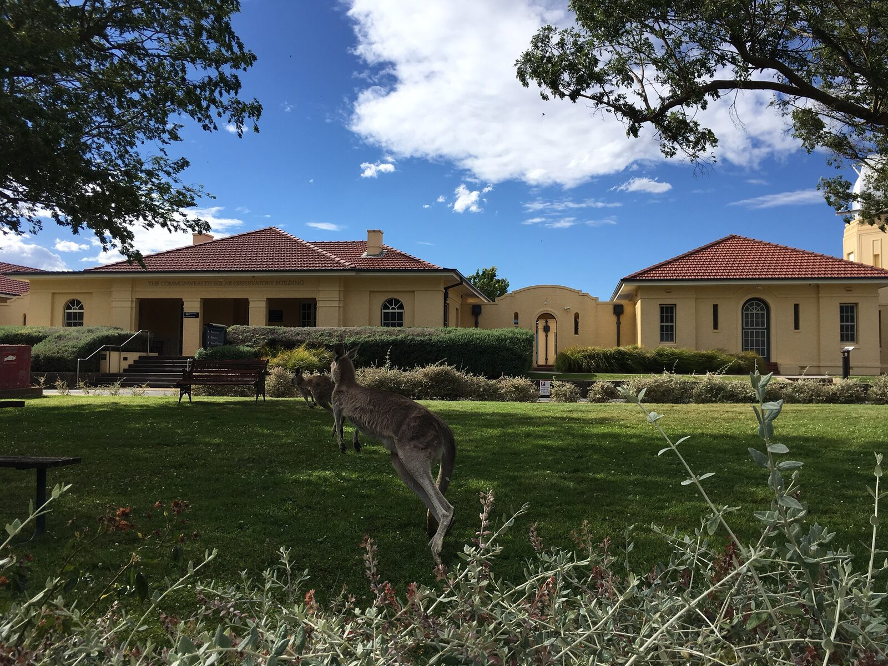

Gallery / Places
Places
Snapshots from the observatories and institutes where I have worked.

Mount Stromlo Observatory, Canberra
The Commonwealth Solar Observatory building at the Research School of Astronomy and Astrophysics,
Australian National University, with a couple of locals on the lawn.
January 2017, photo by Seo-Won Chang